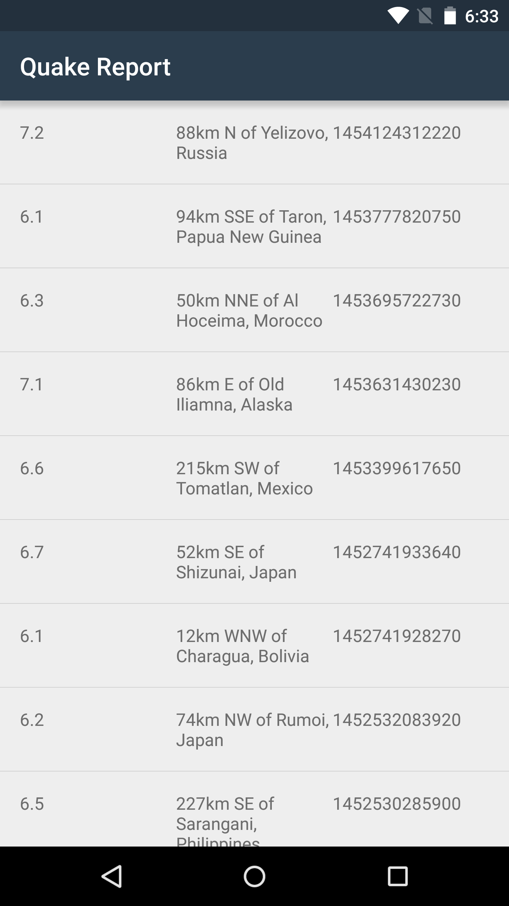

18. Parse JSON response in Quake Report app
Parse JSON response in Quake Report app
Question:
In the last quiz, we already talked about how to traverse the JSON object tree to extract the values we care about. You just parsed JSON in your head! That was a bit of a manual, tedious process though, so let’s get the app to do it for us. We will just have to write down the logic step-by-step so that the app can take care of it for us.
Technically, we would get a real-time response from the Internet, but for now we’re going to simulate the fact that we got this particular JSON response by hardcoding it into our app. That will allow us to build out all the logic in our app and test that it works, so that we can handle any JSON response in the future.
The response we'll be using:
http://earthquake.usgs.gov/fdsnws/event/1/query?format=geojson&starttime=2016-01-01&endtime=2016-01-31&minmag=6&limit=10
Your Turn
In the Quake Report app, you’ll write code to convert this JSON response and turn it into an ArrayList of Earthquake objects with the proper attributes.
Copy/paste the code from the QueryUtils.java class (we’ve provided this for you) into a new file within your app. Notice that the particular JSON response we want to use is already defined in the SAMPLE_JSON_RESPONSE String constant at the top of the file.
Finish implementing the TODO that was left in the QueryUtils.extractEarthquakes() method. Here’s some pseudocode of what needs to be done:
Convert SAMPLE_JSON_RESPONSE String into a JSONObject
Extract “features” JSONArray
Loop through each feature in the array
Get earthquake JSONObject at position i
Get “properties” JSONObject
Extract “mag” for magnitude
Extract “place” for location
Extract “time” for time
Create Earthquake java object from magnitude, location, and time
Add earthquake to list of earthquakesModify the EarthquakeActivity to call QueryUtils.extractEarthquakes() to get a list of Earthquake objects from the JSON response.
In EarthquakeActivity, instead of creating a fake list of earthquakes:
// Create a fake list of earthquakes.
ArrayList<Earthquake> earthquakes = new ArrayList<>();
earthquakes.add(new Earthquake("7.2", "San Francisco", "Feb 2, 2016"));
earthquakes.add(new Earthquake("6.1", "London", "July 20, 2015"));
earthquakes.add(new Earthquake("3.9", "Tokyo", "Nov 10, 2014"));
earthquakes.add(new Earthquake("5.4", "Mexico City", "May 3, 2014"));
earthquakes.add(new Earthquake("2.8", "Moscow", "Jan 31, 2013"));
earthquakes.add(new Earthquake("4.9", "Rio de Janeiro", "Aug 19, 2012"));
earthquakes.add(new Earthquake("1.6", "Paris", "Oct 30, 2011"));Replace with this code:
// Create a fake list of earthquakes.
ArrayList<Earthquake> earthquakes = QueryUtils.extractEarthquakes();The resulting app should look like this:
